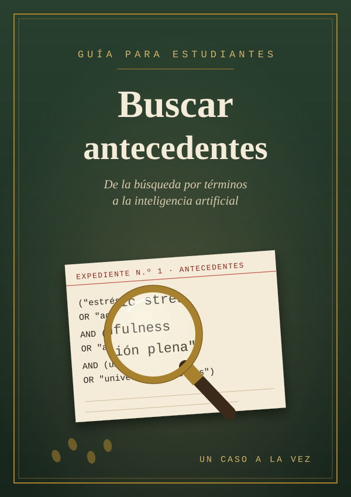

flowchart LR
A["Parte I<br/>Fundamentos<br/>(cap. 1-3)"] --> B["Parte II<br/>Técnicas de búsqueda<br/>(cap. 4-6)"]
B --> C["Parte III<br/>Búsqueda sistemática<br/>(cap. 7-9)"]
C --> D["Parte IV<br/>IA, evaluación y escritura<br/>(cap. 10-12)"]
Buscar antecedentes
Guía para estudiantes: de la búsqueda por términos a la inteligencia artificial
Presentación

¿Para quién es esta guía?
Esta guía está pensada para estudiantes que tienen que buscar antecedentes para un trabajo práctico, un proyecto de investigación, una tesina o una tesis. No supone conocimientos previos: empieza por lo básico (qué es un antecedente, dónde se busca) y avanza hasta las técnicas que se usan en las revisiones sistemáticas y las herramientas basadas en inteligencia artificial.
Buscar bien no es un talento innato. Es un conjunto de decisiones que se pueden aprender, explicar y repetir. Cuando una búsqueda es buena, otra persona puede reproducirla y llegar a resultados parecidos. Ese es el objetivo de fondo de todo el libro.
Cómo está organizado
El recorrido va de lo general a lo específico y de lo clásico a lo nuevo:
| Parte | Capítulos | Qué vas a aprender |
|---|---|---|
| I. Fundamentos | 1. Qué son los antecedentes 2. Planificar la búsqueda 3. Dónde buscar |
Para qué sirven los antecedentes, cómo pasar de un tema a una pregunta y qué fuentes y bases de datos existen. |
| II. Técnicas de búsqueda | 4. Búsqueda por términos 5. Operadores y cadenas de búsqueda 6. Buscar en español y en inglés |
Cómo elegir palabras, usar vocabularios controlados, combinar términos con operadores y construir cadenas en más de un idioma. |
| III. Búsqueda sistemática | 7. La pregunta PICO y sus variantes 8. Revisiones sistemáticas y PRISMA 9. Búsqueda por citas y estrategias complementarias |
Cómo estructurar una pregunta, cómo se hace y se reporta una revisión sistemática y cómo completar una búsqueda más allá de las bases de datos. |
| IV. IA, evaluación y escritura | 10. Inteligencia artificial para buscar 11. Evaluar lo que encontramos 12. Gestionar referencias y escribir los antecedentes |
Qué aportan (y qué riesgos tienen) las herramientas con IA, cómo juzgar la calidad de una fuente y cómo convertir lo encontrado en un texto. |
Al final hay cuatro anexos: plantillas listas para usar, un glosario, un directorio de recursos con enlaces y la bibliografía citada.
Un caso que recorre todo el libro
Para que las técnicas no queden en abstracto, varios capítulos trabajan sobre el mismo ejemplo:
Caso guía. Una estudiante de Psicología quiere saber si los programas de mindfulness (atención plena) reducen el estrés académico en estudiantes universitarios.
Vamos a ver cómo ese interés inicial se convierte en una pregunta (capítulo 2), en una lista de términos en español y en inglés (capítulos 4 y 6), en cadenas de búsqueda para distintas bases (capítulo 5), en una pregunta PICO (capítulo 7) y, finalmente, en un diagrama de flujo PRISMA (capítulo 8).
También aparecen ejemplos de otras disciplinas —educación, comunicación, salud, gestión, diseño, ingeniería— porque la lógica de la búsqueda es la misma aunque cambien las bases de datos.
Convenciones
A lo largo del texto vas a encontrar recuadros como estos:
Nota al margenNota
Información complementaria o aclaraciones.
PistaEn la práctica
Consejos concretos para aplicar en tu búsqueda.
CuidadoError frecuente
Problemas habituales y cómo evitarlos.
Clave del casoPara recordar
La idea central de una sección.
Las cadenas de búsqueda aparecen en bloques de código, para que se puedan copiar tal cual:
("estrés académico" OR "academic stress") AND (universitarios OR "university students")Cada capítulo termina con un resumen y una actividad para practicar.
Una advertencia sobre las herramientas
Las bases de datos cambian sus interfaces, las revistas cambian de editorial y las herramientas de inteligencia artificial aparecen, se transforman y desaparecen a gran velocidad. Por eso la guía se concentra en principios que duran (cómo pensar una búsqueda, cómo combinar términos, cómo documentar lo que se hizo) y menciona herramientas concretas como ejemplos. Si una pantalla no se ve igual que en la descripción, buscá la sección de ayuda (Help, Search tips) de la base: casi todas explican su sintaxis en una página.
El capítulo de inteligencia artificial está actualizado a septiembre de 2026.
Pedir ayuda también es una estrategia
Las bibliotecas universitarias tienen personal especializado en búsqueda de información. Consultar a un bibliotecario o bibliotecaria no es un último recurso: es una de las cosas más eficientes que se pueden hacer al empezar, sobre todo para saber a qué bases de datos tiene acceso tu institución.
Sugerencia de uso en clase
Las actividades de los capítulos están encadenadas. Si cada estudiante trabaja sobre su propio tema desde el capítulo 1, al terminar tiene una pregunta estructurada, una bitácora, cadenas de búsqueda en varias bases y en dos idiomas, un diagrama PRISMA y un primer borrador del apartado de antecedentes.
Una secuencia posible en ocho encuentros:
| Encuentro | Capítulos | Producto de la actividad |
|---|---|---|
| 1 | 1 y 2 | Pregunta inicial, tabla de conceptos y bitácora |
| 2 | 3 | Selección de bases de datos justificada |
| 3 | 4 | Descriptores y palabras clave por concepto |
| 4 | 5 y 6 | Cadenas de búsqueda bilingües en dos bases |
| 5 | 7 | Pregunta PICO (o variante) y criterios de inclusión |
| 6 | 8 y 9 | Mini protocolo, búsqueda por citas y diagrama PRISMA |
| 7 | 10 y 11 | Ejercicio de verificación de IA y evaluación de fuentes |
| 8 | 12 | Matriz de antecedentes y párrafo de síntesis |